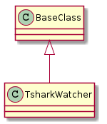

A module to watch frame and byte-counts using tshark.
class TsharkWatcherEnum(object):
"""
A class to hold variable names
"""
__slots__ = ()
frames = "frames"
bytes = 'bytes'
# end class TsharkWatcherEnum

| TsharkWatcher(connection[, output, interface]) | A class to watch bytes and frames using tshark | ||
| TsharkWatcher.timestamp |
|
||
| TsharkWatcher.output |
|
||
| TsharkWatcher.expression |
|
||
| TsharkWatcher.call_once() | |||
| TsharkWatcher.stop() |
|
||
| TsharkWatcher.__call__([duration]) |
|
if __name__ == "__main__":
from apetools.connections.sshconnection import SSHConnection
c = SSHConnection("portegeether", "portegeadmin")
watch = TsharkWatcher(c)
watch()